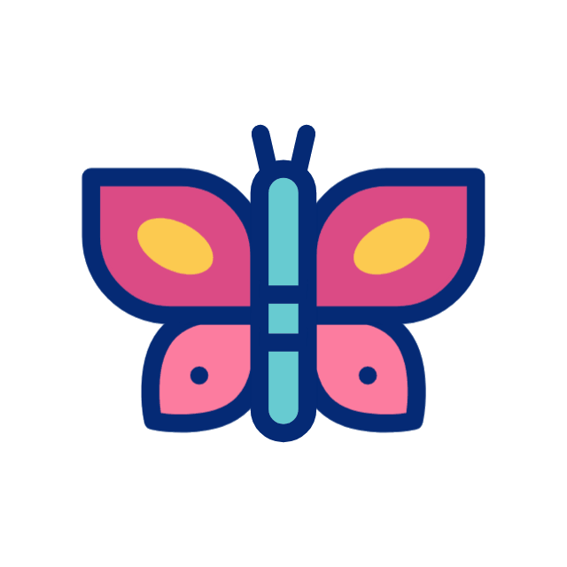
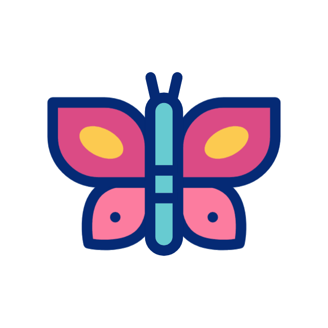

Hey there! I’m a Full Stack Developer with 7 years of hands-on experience building scalable, user-centric web applications and I recently completed my Masters in Computer Science from George Mason University.
I specialize in both frontend and backend development, with a strong foundation in React, Python, Node.js, and cloud technologies like AWS. I love crafting clean, intuitive interfaces just as much as architecting solid backend systems. My work spans industries, but my focus is always the same: building products that are fast, functional, and a joy to use.
Outside of work, I’m an artist at heart. Whether it's painting, creating mandala patterns, or diving into digital illustration, I bring that same creativity into the way I write code and design user experiences.
This portfolio brings together both sides of my world—technology and art. Thanks for stopping by, and I’d love to connect and build something meaningful together!

HTML

CSS

JavaScript

Angular

React

Python

Node JS

.NET

C#

MSSQL

MySQL

VS Code

SQL Server Management Studio

Juypter Lab

Figma

Github

Jira

Collaborated on a project consolidating algorithms (e.g., SISA, Fisher’s, Influence-based algorithms) into a publicly accessible repository to address GDPR’s "Right to be Forgotten" and foster reproducible experimentation.
View Project
Developed a Computer Vision based Kivy application incorporating Siamese deep convolutional neural network to authenticate users, leveraging TensorFlow platform, by building the entire architecture from scratch and training the model on Google Colab with L4 GPU.
Completed a 10-week project-based web development course by learning HTML, CSS, JavaScript, DOM manipulation, and animations, and developed a fully functional website called FutureSeeds.
View ProjectLearned drone basics, conducted research, and gained hands-on experience in prototyping during an 8-week course, pitched the idea "Exploring Equidistant Drone Prototype Using GPS and Radio Communication" and earned a micro-credential badge in Unmanned Aerial Systems Prototyping.

 
